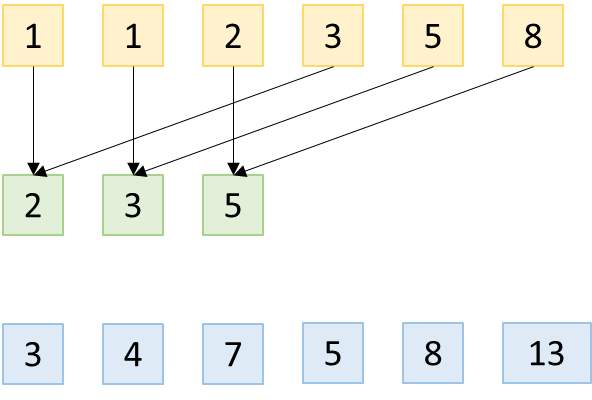
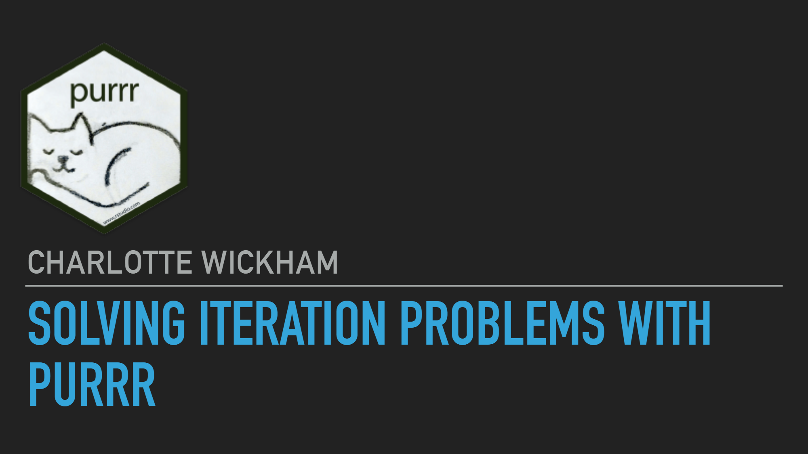

[1] 3 4 7 11 18 29Матрицы, списки, датафреймы
Условия и циклы
Основы векторизации
Операции над векторами разной длины, ресайклинг.
Создание собственных функций.
Семейство функций *apply().
Импорт и экспорт данных в R.
Описательные статистики
Что произойдет в результате выполнения этого кода?
[1] 3 4 7 11 18 29Произойдет поэлементное сложение каждого элемента первого вектора с элементами второго вектора.
Можно проводить любые операции над векторами одной длины: сложение, вычитание, умножение, возведение в степень и тд. Это очень полезно и является одним из преимуществ R для анализа данных.
Что произойдет, если провести подобные операции над векторами разной длины?
Теперь представим, что векторы у нас разной длины, попробуем сделать сложение и вычитание:
[1] 3 4 7 5 8 13
Значения вектора меньшего размера как бы переиспользуются (recycling) для значений вектора большего.
Можно умножить вектор на какое-то значение (такое задание уже было в домашней работе). Здесь тоже сработает правило ресайклинга: единственное значение вектора переиспользуется каждый раз.
Тоже самое для логических операций:
[1] FALSE FALSE FALSE TRUE FALSE FALSE[1] FALSE FALSE FALSE TRUE TRUE TRUEИ даже (хотя такое не рекомендуется):
Для проверки длины векторов можно использовать функцию length()
[1] 6[1] 4Warning in long_vector - vector2: длина большего объекта не является
произведением длины меньшего объекта[1] -2 -4 1 -1 2 3Ресайклинг некратных векторов не рекомендуется к использованию из-за непредсказуемости аутпута.
Чтобы удивлять друзей
Наиболее полезен ресайклинг одного значения, например, чтобы сделать преобразование.
x / mean(x), x / 1000000
Обращать внимание, если ресайклинг произошел не так, как было задумано.
==:[1] "green" "blue" "blue" "green"Вроде все правильно. Или все же нет?
Здесь сработало правило ресайклинга, которое привело к неправильному результату без уведомлений об ошибке, что особенно неприятно
%in% для проверки наличия элементов вектораПравильно проверять, есть ли элементы в векторе, нужно с помощью оператора %in%, в который можно подать целый вектор значений.
Иногда бывает полезно извлечь индексы элементов TRUE логического вектора, тогда можно использовать функцию which().
[1] TRUE TRUE FALSE TRUE TRUE TRUE[1] 1 2 4 5 6Вообще перевод логического вектора в числовой для индексации может повысить производительность, если в векторе очень мало TRUE и размер вектора измеряется в десятках тысяч. Подробнее можно почитать здесь.
Однако вот такая запись избыточна:
Для проверки, есть ли хоть один TRUE в векторе используется функция any(), для проверки, все ли значения в векторе TRUE, есть функция all().
Нередко возникает ситуация, когда нужно проделать одну и ту же операцию несколько раз. В таком случае есть смысл написать свою функцию. Действует правило трех: если понадобилось скопировать один и тот же кусочек кода три раза, подумайте о создании функции.
Преимущества написания функций:
Способ избежать ошибок copy-paste, например, есть риск не поменять название переменной в одном месте.
Если необходимо поменять какой-то параметр, то достаточно поменять в функции один раз, а не каждый раз при вызове этого кода.
Можно давать функции понятное название, что облегчит восприятие и читаемость кода.
Функции пишутся по шаблону:
Например, создадим функцию, которая возводит заданное число в заданную степень.
Когда функция встречает ключевое слово return, выполнение функции прекращается и возвращается подсчитанное значение (все, что после return будет проигнорировано).
Ключевое слово return можно не использовать, тогда функция вернет последнее вычисленное значение (если последним действием было не присваивание).
return все же рекомендуется к использованию, чтобы повысить читаемость кода.
Необходимо давать фукциям понятные названия, обычно советуют использовать глаголы.
Для функций, которые планируется использовать не только для себя, рекомендуется прописать проверку входных значений и обработку исключений.
Почитать можно детальнее здесь (на английском) и здесь (на русском).
Как многие могли заметить для встроенных функций в R, иногда мы задаем в явном виде названия аргументов, а иногда полагаемся на порядок.
[1] 10 15 10 15[1] 10 15 10 15[1] 10 10 15 15[1] 10 10 15 15 10 10 15 15[1] 10 10 15 15 10 10 15 15Попробуем создать полезную функцию, вычисляющую моду - наиболее часто встречающееся значение в выборке. Здесь будут полезны функции table() и which.max() - возвращает индекс максимального значения
set.seed(42) # чтобы случайное семплирование воспроизводилось
x <- sample(1:5, 15, replace = TRUE)
x [1] 1 5 1 1 2 4 2 2 1 4 1 5 4 2 2calculate_mode <- function(x) {
if (is.character(x)) {
return(names(table(x)[which.max(table(x))]))
}
return(as.numeric(names(table(x)[which.max(table(x))])))
}
calculate_mode(x)[1] 1[1] "a"При создании функции у нее есть свое собственное окружение (локальное). В этом локальном окружении существуют переменные функции.
Есть глобальное окружение, в котором обычно хранятся созданные переменные. Если функция не находит нужную переменную в локальном окружении, то она отправляется их искать в предыдущем окружении - в общем случае в глобальном.
Однако это не является хорошей практикой, всегда рекомендуется создавать переменные внутри функции и не надеяться на глобальное окружение.
Созданные переменные внутри функции не попадают в глобальное окружение.
Нередко встречается ситуация, когда какой-то аргумент функции используется чаще других. В таком случае есть смысл задать аргумент по умолчанию, например в функции sort(), по умолчанию аргумент decreasing = FALSE, следовательно, функция сортирует по возрастанию.
[1] -1 1 2 4 5 10[1] 10 5 4 2 1 -1Можно самостоятельно задавать их для своих функций.
Аргументы функции могут не использоваться, если их не вызвать эксплицитно, поскольку в R есть концепция ленивых вычислений.
Ленивые вычисления позволяют обращаться к переменной, только если ее использование необходимо.
apply()Сама функция apply() применяется к матрицам или многомерным массивам. Можно применить apply() к датафрейму, но он сначала превратится в матрицу.
Например, задача посчитать среднее по всем столбцам матрицы.
Синтаксис: apply(array, margin, function), где margin - измерение, по которому будет итерироваться функция function, 1 - это строки, 2 - столбцы.
apply()[1] 9 10 11 12[1] 2.5 6.5 10.5 14.5 18.5Попробуем применить apply() к датафрейму mtcars
mpg cyl disp hp drat wt qsec
20.090625 6.187500 230.721875 146.687500 3.596563 3.217250 17.848750
vs am gear carb
0.437500 0.406250 3.687500 2.812500 Обратите внимание!
Здесь функция mean без круглых скобок, поскольку используется не сама функция, а название функции является аргументом функции apply().
*apply()Существует целый зоопарк сходных функций: lapply, vapply, sapply, tapply, mapply, однако на практике чаще используется lapply, а также функции семейства map*() из библиотеки purrr.
Наиболее полезная функция lapply() (от слов list apply), которая принимает на вход вектор или лист и выполняет заданную функцию.
apply()Давайте используем нашу простую функцию, которая вычисляет моду в данных.
Sepal.Length Sepal.Width Petal.Length Petal.Width Species
"5.0" "3.0" "1.4" "0.2" "setosa" Анонимная функция - функция, которая создается и используется “на лету” в функциях apply().
Распространенная практика использовать анонимные функции, если действие помещается в одну строчку.
Синтаксис в lapply() такой: function(i) <действие>, где i - это i-тый элемент листа, для которого выполняется действие.
[[1]]
[1] 11 11 11 11 11 11 11 11 11 11
[[2]]
[1] 12 12 12 12 12 12 12 12 12 12
[[3]]
[1] 13 13 13 13 13 13 13 13 13 13
[[4]]
[1] 14 14 14 14 14 14 14 14 14 14
[[5]]
[1] 15 15 15 15 15 15 15 15 15 15
[[6]]
[1] 16 16 16 16 16 16 16 16 16 16
[[7]]
[1] 17 17 17 17 17 17 17 17 17 17
[[8]]
[1] 18 18 18 18 18 18 18 18 18 18
[[9]]
[1] 19 19 19 19 19 19 19 19 19 19
[[10]]
[1] 20 20 20 20 20 20 20 20 20 20*apply() -> purrr::map_*()Часто можно встретить функцию sapply() (от слов simplified apply), которая упрощает выдачу. Однако в нынешней мете R не рекомендуется к использованию из-за непредсказуемости аутпута.
*apply() -> purrr::map_*()Чтобы контролировать формат аутпута используем функции семейства map_*() из библиотеки purrr.
В простом случае синтаксис map() не отличим от lapply(), аутпут всегда будет списком.
Можно задать желаемый аутпут с помощью постфикса, например map_chr() - аутпут будет строковым вектором, map_dbl() - числовой вектор.
purrrСупер крутая презентация от Charlotte Wickham
Ссылка на туториал
Загрузка таблиц:
Про организацию файлов для работы рекомендую почитать здесь.
Допустим, у нас лежит файл wc3_units.txt в директории data, попробуем его прочитать.
Unit Race Gold Wood Pop HP Armor.Type Armor Sight Speed Time
1 Peasant Human 75 0 1 220 Medium 0 80 190 15
2 Militia Human - - 1 220 Heavy 4 140 270 -
3 Footman Human 135 0 2 420 Heavy 2 140 270 20
4 Rifleman Human 205 30 3 535 Medium 0 140 270 26
5 Knight Human 245 60 4 835 Heavy 5 140 350 45
6 Priest Human 135 10 2 290 Unarmored 0 140 270 28
Ground.Attack Damage Cooldown DPS Range Air.Attack Damage.1 Cooldown.1
1 Normal 5.50 2.00 2.75 0 - - -
2 Normal 12.50 1.20 10.42 0 - - -
3 Normal 12.50 1.35 9.26 0 - - -
4 Pierce 21.00 1.50 14.00 40 Pierce 21.00 1.50
5 Normal 34.00 1.40 24.29 0 - - -
6 Magic 8.50 2.00 4.25 60 Magic 8.50 2.00
DPS.1 Range.1
1 - -
2 - -
3 - -
4 14.00 60
5 - -
6 4.25 60Удобно посмотреть, все ли прочитано корректно с помощью функции str()
'data.frame': 71 obs. of 21 variables:
$ Unit : chr "Peasant" "Militia" "Footman" "Rifleman" ...
$ Race : chr "Human" "Human" "Human" "Human" ...
$ Gold : chr "75" "-" "135" "205" ...
$ Wood : chr "0" "-" "0" "30" ...
$ Pop : chr "1" "1" "2" "3" ...
$ HP : int 220 220 420 535 835 290 325 600 200 360 ...
$ Armor.Type : chr "Medium" "Heavy" "Heavy" "Medium" ...
$ Armor : chr "0" "4" "2" "0" ...
$ Sight : int 80 140 140 140 140 140 140 140 180 140 ...
$ Speed : chr "190" "270" "270" "270" ...
$ Time : chr "15" "-" "20" "26" ...
$ Ground.Attack: chr "Normal" "Normal" "Normal" "Pierce" ...
$ Damage : chr "5.50" "12.50" "12.50" "21.00" ...
$ Cooldown : chr "2.00" "1.20" "1.35" "1.50" ...
$ DPS : chr "2.75" "10.42" "9.26" "14.00" ...
$ Range : chr "0" "0" "0" "40" ...
$ Air.Attack : chr "-" "-" "-" "Pierce" ...
$ Damage.1 : chr "-" "-" "-" "21.00" ...
$ Cooldown.1 : chr "-" "-" "-" "1.50" ...
$ DPS.1 : chr "-" "-" "-" "14.00" ...
$ Range.1 : chr "-" "-" "-" "60" ...Можно увидеть, что у нас почти все столбцы прочитались как строковые, это плохо для дальнейшей работы. Произошло это потому что пропущенное значение обозначено как '-'. Исправить можно разными способами, например заменить все значения в таблице и затем эксплицитно конвертировать столбцы в числовые, но проще всего поправить при чтении файла
Для корректного чтения используем аргумент na.strings, в который запишем как в нашей таблице обозначены пропущенные значения
df <- read.table('data/wc3_units.txt', sep = '\t',
header = TRUE, na.strings = '-')
head(df)
str(df) Unit Race Gold Wood Pop HP Armor.Type Armor Sight Speed Time
1 Peasant Human 75 0 1 220 Medium 0 80 190 15
2 Militia Human NA NA 1 220 Heavy 4 140 270 NA
3 Footman Human 135 0 2 420 Heavy 2 140 270 20
4 Rifleman Human 205 30 3 535 Medium 0 140 270 26
5 Knight Human 245 60 4 835 Heavy 5 140 350 45
6 Priest Human 135 10 2 290 Unarmored 0 140 270 28
Ground.Attack Damage Cooldown DPS Range Air.Attack Damage.1 Cooldown.1
1 Normal 5.5 2.00 2.75 0 <NA> NA NA
2 Normal 12.5 1.20 10.42 0 <NA> NA NA
3 Normal 12.5 1.35 9.26 0 <NA> NA NA
4 Pierce 21.0 1.50 14.00 40 Pierce 21.0 1.5
5 Normal 34.0 1.40 24.29 0 <NA> NA NA
6 Magic 8.5 2.00 4.25 60 Magic 8.5 2.0
DPS.1 Range.1
1 NA NA
2 NA NA
3 NA NA
4 14.00 60
5 NA NA
6 4.25 60'data.frame': 71 obs. of 21 variables:
$ Unit : chr "Peasant" "Militia" "Footman" "Rifleman" ...
$ Race : chr "Human" "Human" "Human" "Human" ...
$ Gold : int 75 NA 135 205 245 135 155 215 90 180 ...
$ Wood : int 0 NA 0 30 60 10 20 30 30 70 ...
$ Pop : int 1 1 2 3 4 2 2 3 1 3 ...
$ HP : int 220 220 420 535 835 290 325 600 200 360 ...
$ Armor.Type : chr "Medium" "Heavy" "Heavy" "Medium" ...
$ Armor : int 0 4 2 0 5 0 0 3 2 0 ...
$ Sight : int 80 140 140 140 140 140 140 140 180 140 ...
$ Speed : int 190 270 270 270 350 270 270 300 400 270 ...
$ Time : int 15 NA 20 26 45 28 30 28 13 40 ...
$ Ground.Attack: chr "Normal" "Normal" "Normal" "Pierce" ...
$ Damage : num 5.5 12.5 12.5 21 34 8.5 11 14 7.5 58 ...
$ Cooldown : num 2 1.2 1.35 1.5 1.4 2 1.75 1.9 2.5 3.5 ...
$ DPS : num 2.75 10.42 9.26 14 24.29 ...
$ Range : num 0 0 0 40 0 60 60 25 0 115 ...
$ Air.Attack : chr NA NA NA "Pierce" ...
$ Damage.1 : num NA NA NA 21 NA 8.5 11 NA 14.5 NA ...
$ Cooldown.1 : num NA NA NA 1.5 NA 2 1.75 NA 2 NA ...
$ DPS.1 : num NA NA NA 14 NA 4.25 6.29 NA 7.25 NA ...
$ Range.1 : num NA NA NA 60 NA 60 60 NA 50 NA ...Теперь пропущенные значения обработались корректно.
summary() - чтобы быстро оценить данныеПолезная функция, чтобы получить общее представление о данных.
Unit Race Gold Wood
Length:71 Length:71 Min. : 60.0 Min. : 0.00
Class :character Class :character 1st Qu.:135.0 1st Qu.: 20.00
Mode :character Mode :character Median :190.0 Median : 30.00
Mean :195.6 Mean : 39.06
3rd Qu.:232.5 3rd Qu.: 60.00
Max. :425.0 Max. :120.00
NA's :23 NA's :23
Pop HP Armor.Type Armor
Min. :0.000 Min. : 75.0 Length:71 Min. : 0.000
1st Qu.:2.000 1st Qu.: 300.0 Class :character 1st Qu.: 0.000
Median :3.000 Median : 435.0 Mode :character Median : 1.000
Mean :2.729 Mean : 553.7 Mean : 1.257
3rd Qu.:4.000 3rd Qu.: 700.0 3rd Qu.: 2.000
Max. :7.000 Max. :1600.0 Max. :10.000
NA's :12 NA's :1
Sight Speed Time Ground.Attack
Min. : 80.0 Min. :190.0 Min. :13.0 Length:71
1st Qu.:120.0 1st Qu.:270.0 1st Qu.:24.0 Class :character
Median :140.0 Median :270.0 Median :30.0 Mode :character
Mean :135.9 Mean :283.1 Mean :32.8
3rd Qu.:140.0 3rd Qu.:320.0 3rd Qu.:40.0
Max. :190.0 Max. :400.0 Max. :65.0
NA's :1 NA's :22
Damage Cooldown DPS Range
Min. : 5.50 Min. :1.000 Min. : 2.50 Min. : 0.00
1st Qu.: 12.50 1st Qu.:1.500 1st Qu.: 7.89 1st Qu.: 0.00
Median : 19.50 Median :1.750 Median :11.85 Median : 30.00
Mean : 26.68 Mean :1.902 Mean :14.04 Mean : 33.36
3rd Qu.: 34.50 3rd Qu.:2.100 3rd Qu.:17.63 3rd Qu.: 51.25
Max. :104.00 Max. :4.500 Max. :48.57 Max. :115.00
NA's :4 NA's :3 NA's :4 NA's :3
Air.Attack Damage.1 Cooldown.1 DPS.1
Length:71 Min. : 7.50 Min. :1.050 Min. : 3.570
Class :character 1st Qu.:12.00 1st Qu.:1.500 1st Qu.: 7.415
Mode :character Median :18.00 Median :1.750 Median :11.140
Mean :25.59 Mean :1.733 Mean :15.510
3rd Qu.:32.75 3rd Qu.:2.000 3rd Qu.:20.415
Max. :89.00 Max. :3.000 Max. :50.950
NA's :36 NA's :36 NA's :36
Range.1
Min. : 0.00
1st Qu.:35.00
Median :50.00
Mean :44.64
3rd Qu.:60.00
Max. :60.00
NA's :36 Сохраним первые 15 строк датасета mtcars в файловую систему.
Напоминаю, что лекции будут продолжаться при наличии поддержки слушателей, поскольку официально курс никак не финансируется.
Ссылка и куар код: